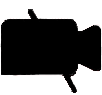

Funktionen
- Rein-/Rauszoomen Strg + , Strg -
- Bewegen: Pfeiltasten: → , ← , ↑ , ↓ bzw. W , A , S , D
- Rennen:
⇧ Shift + arrow rsp. or
⇧ Shift +
W ,
A ,
S ,
D
Beachte: Konservationen werden beim Rennen unterbrochen. Beim Laufen bleibt die Verbindung so lange bestehen,
bis sich eine Person außerhalb des Kommunikationsradius (Kreis) begibt. - Kommunikation: Startet automatisch, sobald man in den Kommunikationsradius gerät.
- Chillout areas/ Ruheräume: Keine Kommunikation möglich.
- Raum wechseln: Nutze Treppen und Türen, um in andere Räume oder Gebäude zu gelangen.
- Wände: Die Avatare können nicht über alle Objekte laufen. Wände grenzen die Räume und den Bewegungsradius ein.
-
Stummschaltung:  Das Stummschalten-Symbol markiert Ruhe oder Pausenräume. Hier ist keine Kommunikation möglich.
-
Jitsi:
 Das Kamera-Symbol markiert Bereiche, in denen es möglich ist mit mehreren Spielern über Jitsi zu kommunizieren.
Das Kamera-Symbol markiert Bereiche, in denen es möglich ist mit mehreren Spielern über Jitsi zu kommunizieren.
-
Menü:
 Beim Klicken des Menü-Buttons kannst du deine Einstellungen tätigen und auch deinen Avatarnamen ändern.
Beim Klicken des Menü-Buttons kannst du deine Einstellungen tätigen und auch deinen Avatarnamen ändern.
-
Infopunkt:
 Hier bekommst du Informationen rund um die Hochschule.
Hier bekommst du Informationen rund um die Hochschule.